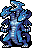

地獄のサーペント Serpent of Hell (Cocytus)
英語版 CrawlWiki の記事「Serpent of Hell (Cocytus)」(0.34 向け、2026-10-06 版)の翻訳です。原文の著者は編集履歴をご覧ください。
ドラゴンをすべて見るにはドラゴンの一覧を参照。
| 地獄のサーペント(コキュートス) D  | |
|---|---|
| HP | 213-430 |
| HD | 17 |
| XP | 6689 |
| 速度 | 14 |
| AC | 20 |
| EV | 12 |
| 意志力 | 180 |
| 攻撃1 | 35（噛みつき: 冷気） |
| 攻撃2 | 35（噛みつき: 冷気） |
| 攻撃3 | 35（噛みつき: 冷気） |
| 攻撃4 | 25（踏みつけ: 踏みつけ） |
| 耐性 | rC+++ rPois+ rMiasma rN+++ rTorm |
| 弱点 | 神聖 |
| 生息地 | 陸上 |
| 知能 | 人間並み |
| 使用 | 何も使わない |
| 分類 | 悪魔 |
| 体格 | 巨大 |
| 種類 | ドラゴン、地獄のサーペント |
| フラグ | 霊視 飛行 ユニーク 扉を壊す 縦長のタイル 名前に the がつく 邪悪 |
.png){kind=link}
| 輝く氷の破片に覆われた、巨大な白い三つ首のドラゴンだ。コキュートスの悪夢のような冷気に完全に取り憑かれている。 |
基本情報
地獄のサーペントはユニークのドラゴンで、地獄のどの分岐で出会うかによって属性が変わる。コキュートスで戦う場合は、身を切るような冷気を吐きかけてくる。サーペント自身にも冷気のダメージはまったく効かない。
呪文
| タイル | 名前 | ダメージ | 射程 | フラグ |
|---|---|---|---|---|
| |
冷気のブレス | 3d34 | 5 | 生来フラグ, ブレスフラグ, 騒音フラグ |
| |
瞬間凍結 | 3d22 | LOS | 生来フラグ, ブレスフラグ, 騒音フラグ |
| |
ドラゴンの召喚 | — | — | 魔法フラグ, 騒音フラグ |
| |
凍える突風 | 2d27 | 5 | 生来フラグ, ブレスフラグ, 騒音フラグ |
小技
- コキュートスのほかの脅威に耐えられるだけの冷気耐性を持ち込んでいれば、ここの地獄のサーペントはたいした脅威にならないはずだ。特殊な能力はどれも rC++ 以上あればほぼ打ち消せるし、それ以外の点ではとりたてて打たれ強いわけでもない。